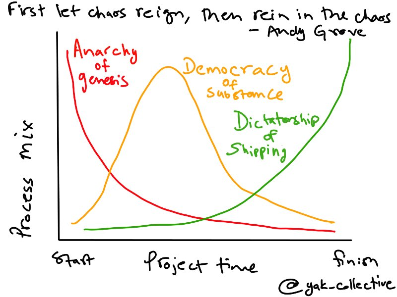
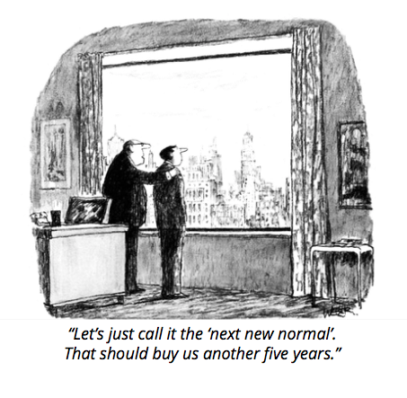

Your twitter archive
RT @amelapay: Hosting chat for indie consultant types on @artofgig/ @yak_collective discord server at 5pm ET
cc @vgr
 Sun Apr 26 19:53:57 +0000 2020
Sun Apr 26 19:53:57 +0000 2020
Event coming up on Yak Collective discord! Chat led by Pam, Apr 26, 2020 02:00PM
Sun Apr 26 20:49:28 +0000 2020
Starting now! https://twitter.com/amelapay/status/1254498870752673793
Sun Apr 26 20:59:28 +0000 2020
Gig economy go brr https://www.cnn.com/2020/04/26/us/gig-workers-informal-jobs-coronavirus/index.html
Mon Apr 27 03:24:45 +0000 2020
RT @SachinB91: Hosting an @artofgig Discord chat at 4PM CST! Today we'll be reading and discussing the pmarca's "ITS TIME TO BUILD"
Mon Apr 27 20:31:39 +0000 2020
Event coming up on Yak Collective discord! Discord chat hosted by Sachin, Apr 27, 2020 02:00PM
Mon Apr 27 20:49:38 +0000 2020
Event coming up on Yak Collective discord! Discord chat hosted by Scott Garlinger, Apr 28, 2020 10:00AM
Tue Apr 28 16:49:39 +0000 2020

Wed Apr 29 05:37:59 +0000 2020
Emergent ideas.
Coming tomorrow.
Wed Apr 29 19:41:22 +0000 2020
RT @hewhocutsdown: @yak_collective we'll be talking about using randomness strategically in 15 minutes on your regular call-in show
Thu Apr 30 02:47:36 +0000 2020
Event coming up on Yak Collective discord! Discord chat hosted by Jordan, Apr 29, 2020 08:00PM
Thu Apr 30 02:52:12 +0000 2020
RT @p_millerd: The big consulting firms have stopped producing interesting ideas
Over the past 2+ weeks I've been helping to wrangle inter…
Thu Apr 30 10:06:59 +0000 2020
RT @kunksed: The @yak_collective is fun 😄 https://twitter.com/p_millerd/status/1255800715227869185
Thu Apr 30 11:42:31 +0000 2020
RT @vinaydebrou: The @yak_collective's first project is out and I contributed to it--
Don't Waste the Reboot
Expect ideas outside the lim…
Thu Apr 30 12:28:58 +0000 2020
RT @dmcdougall: The @yak_collective's first project is out and I contributed to it --
*Don't Waste the Reboot*
25 creative and unexpecte…
Thu Apr 30 15:03:59 +0000 2020
RT @SachinB91: The @yak_collective's first project is out and I enjoyed contributing to it
*Don't Waste the Reboot*
25 create and unexpec…
Thu Apr 30 15:49:02 +0000 2020
RT @SachinB91: The COVID-19 reboot gives an opportunity for smaller companies to create marketplaces where none existed - Cinema halls coul…
Thu Apr 30 15:49:10 +0000 2020
RT @commandodev: This is really, really good. The @yak_collective is going to be one to watch!
Thu Apr 30 15:50:24 +0000 2020
And so it begins! Our first report is out: Don’t Waste the Covid-19 Reboot. Stay tuned for a lot more where this came from.
https://yakcollective.org/projects/yak-wisdom
Thu Apr 30 16:48:55 +0000 2020
RT @collinferry: @p_millerd @context_ing @yak_collective I converted the entire deck to a @RoamResearch page which I've made public here: h…
Thu Apr 30 18:30:55 +0000 2020
RT @tomcritchlow: So the @yak_collective emerges today with their first report - a sensemaking deck on the "next normal". Navigating uncert…
Thu Apr 30 18:31:20 +0000 2020
RT @krishkhubchand: just discovered @yak_collective ... it is sooo close to the new form I was thinking of, worth reading their philosophy:…
Thu Apr 30 18:31:26 +0000 2020
RT @Rodrigo_plp: A group of independent consultants I'm proud to be part of, @yak_collective, is releasing its inaugural report in the form…
Fri May 01 01:53:39 +0000 2020
how many layers of normal are you on
https://yakcollective.org/projects/yak-wisdom

Fri May 01 02:20:55 +0000 2020
RT @RejuvenatingRo1: I know I already retweeted this today but this is valuable stuff.
Everyone in business or in the #gameB community sho…
Fri May 01 03:13:31 +0000 2020